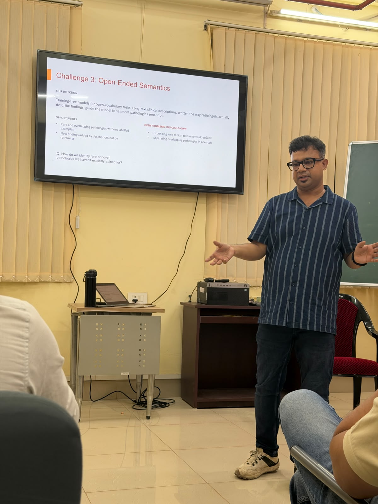

6 Oct 2026
Medical Computer Vision for the Clinic: Gallbladder Cancer and Beyond
Dr. Soumen Basu Dept. of Artificial Intelligence, IIT Kharagpur
Join us every Tuesday from 5 PM to 6 PM IST at the CRR Classroom, Department of Artificial Intelligence (DoAI), IIT Kharagpur for interactive research discussions.
Welcome to the IdoAI Talk Series, a weekly departmental series hosted by the Department of Artificial Intelligence, IIT Kharagpur.
CRR Classroom, 4th Floor
CRR Building, IIT Kharagpur
Tuesdays @ 05:00 PM IST